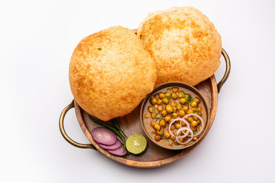

Chhole Bhature

Description
Chhole Bhature is a beloved North Indian dish that pairs spicy chickpea curry (chhole) with deep-fried, fluffy bread (bhature). It’s often enjoyed as a hearty breakfast or a special weekend indulgence.
The chhole are cooked in a rich, tangy tomato-onion gravy with a mix of warm spices, while the bhature are made from a fermented dough and fried until golden and puffed. This dish is best served with sliced onions, pickles, and a glass of lassi.
Ingredients
- For Chhole (Chickpea Curry):
- 1 cup dried chickpeas (or 2 cups canned)
- 2 tablespoons oil
- 1 teaspoon cumin seeds
- 1 bay leaf
- 1 large onion (finely chopped)
- 1 tablespoon ginger-garlic paste
- 2 large tomatoes (pureed)
- 1 teaspoon coriander powder
- 1 teaspoon cumin powder
- 1 teaspoon garam masala
- ½ teaspoon turmeric powder
- 1 teaspoon red chili powder
- Salt to taste
- 1–2 teaspoons dried mango powder (amchur) or lemon juice
- Fresh coriander (for garnish)
- For Bhature:
- 2 cups all-purpose flour (maida)
- 2 tablespoons semolina (sooji)
- ¼ cup plain yogurt
- 1 teaspoon sugar
- ½ teaspoon baking powder
- ¼ teaspoon baking soda
- Salt to taste
- Water (as needed for kneading)
- Oil (for deep frying)
Steps
- Soak chickpeas overnight. Pressure cook until soft (or use canned).
- Heat oil in a pan. Add cumin seeds and bay leaf. Sauté onions until golden.
- Add ginger-garlic paste and cook until fragrant. Add tomato puree and cook until oil separates.
- Mix in all the dry spices. Add the cooked chickpeas and simmer for 10–15 minutes. Finish with amchur or lemon juice.
- To make bhature, mix flour, sooji, yogurt, sugar, salt, baking powder, and soda. Knead into a soft dough using water.
- Cover and rest the dough for 2–3 hours.
- Divide dough into balls, roll into discs, and deep fry in hot oil until puffed and golden.
- Serve hot bhature with spicy chhole, onion rings, and pickle.
Home